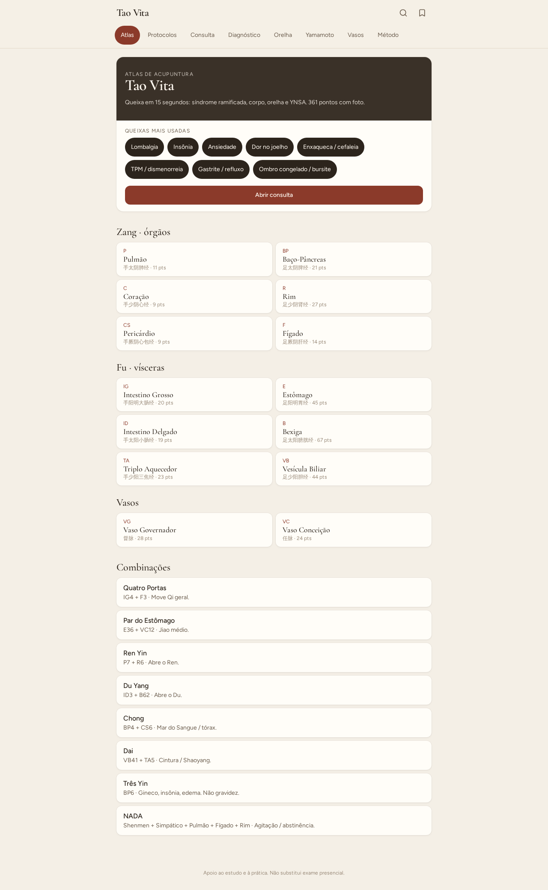
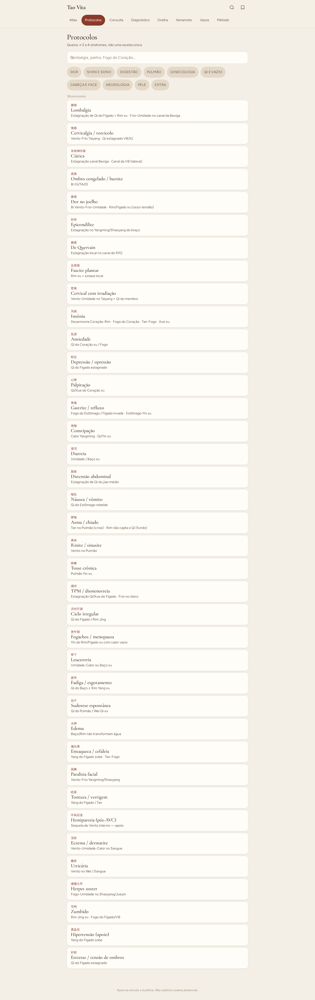
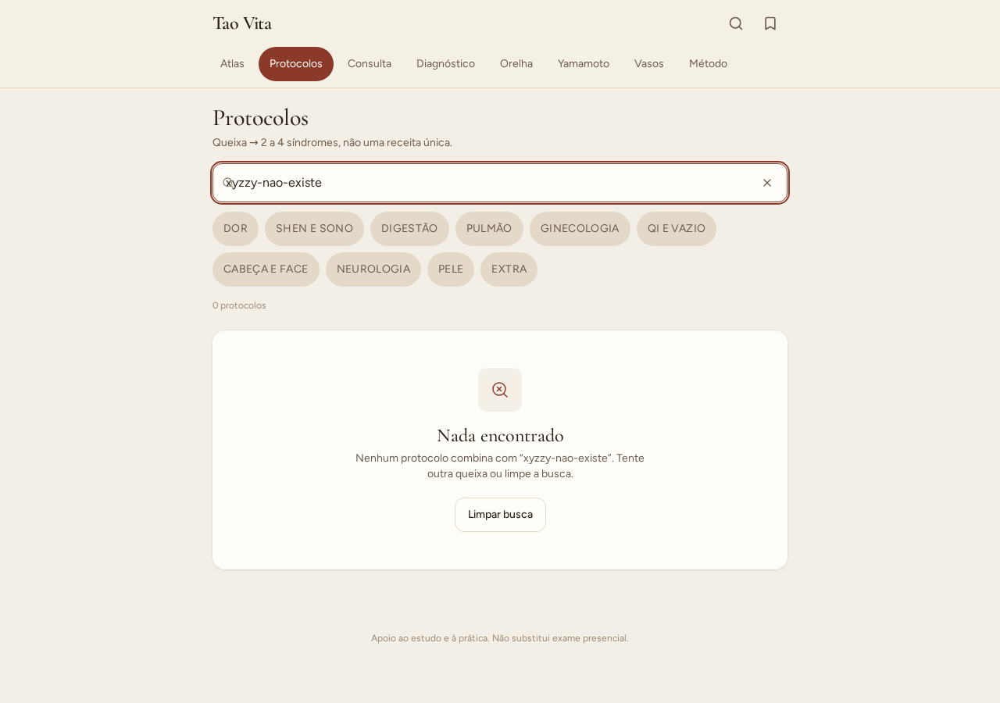
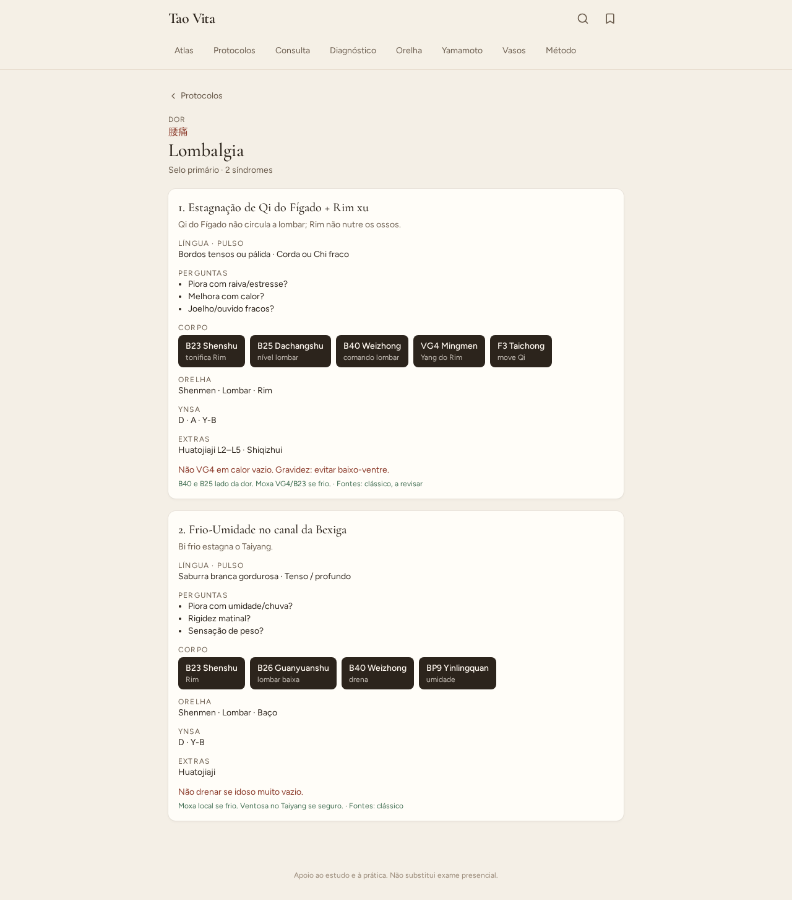
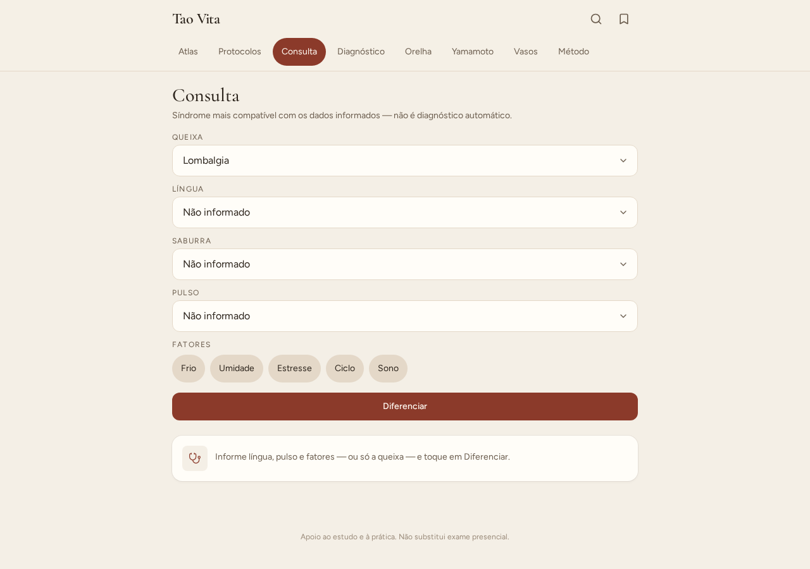
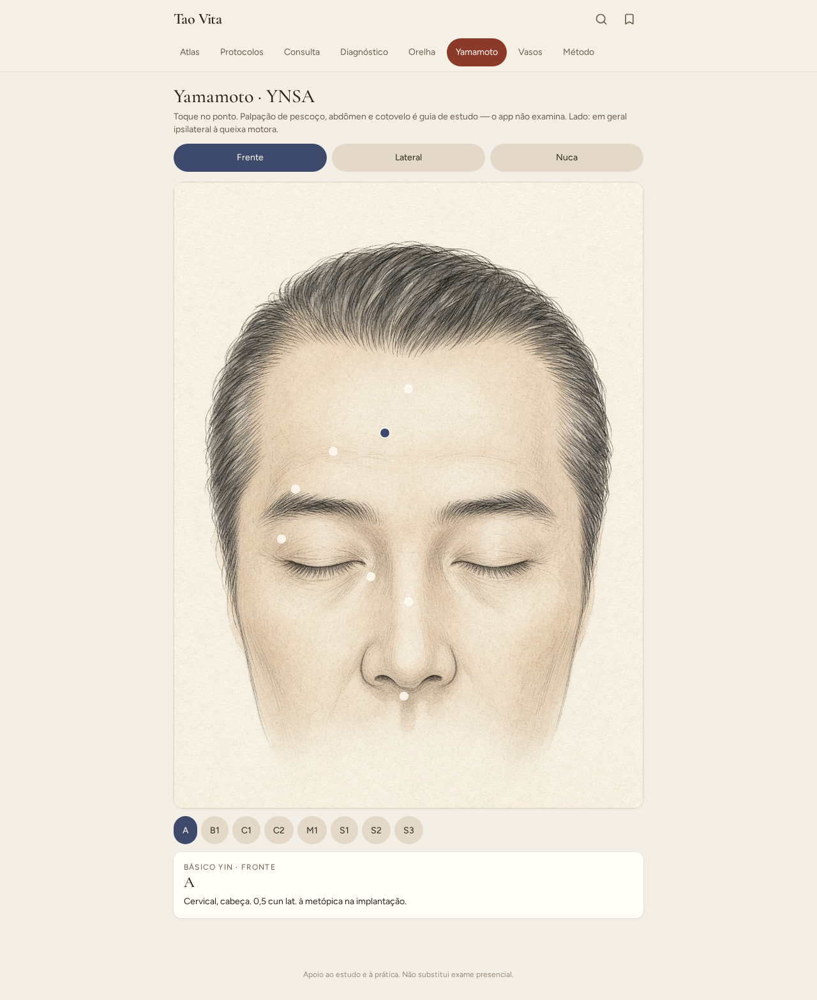
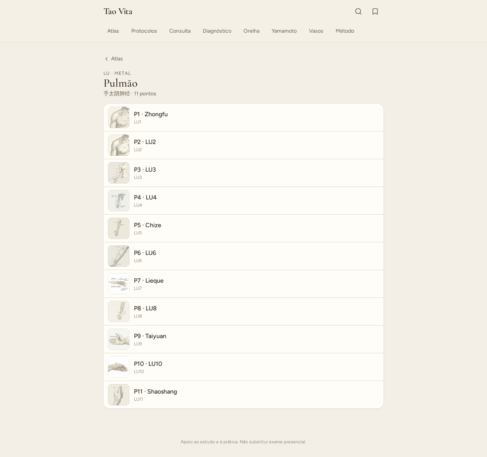
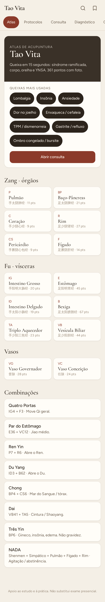
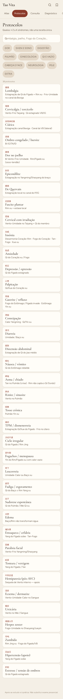
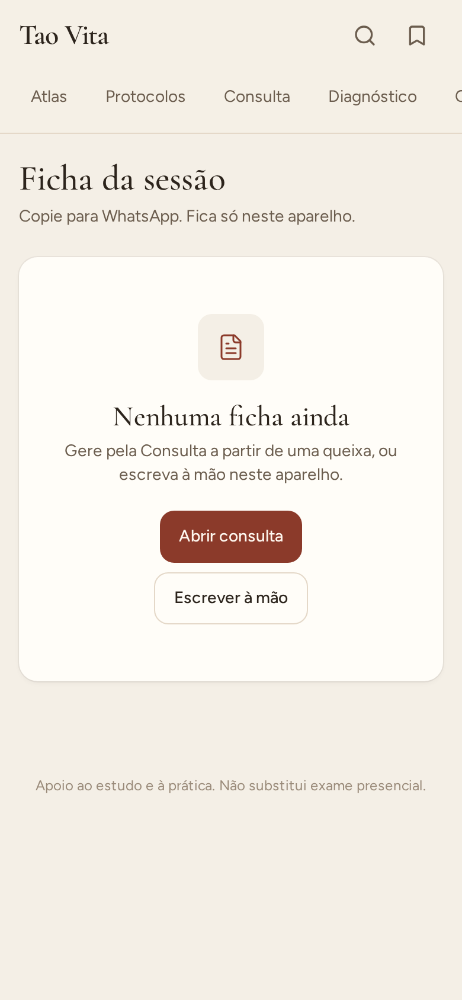

Galeria de telas
Tao Vita v1.1 · capturas de 29/08/2026 · desktop 1280 e mobile 390.
Desktop













Telefone





Tao Vita v1.1 · capturas de 29/08/2026 · desktop 1280 e mobile 390.









